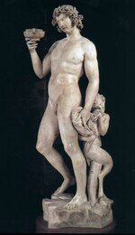
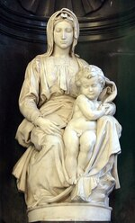
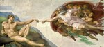
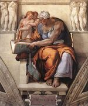
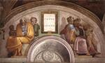
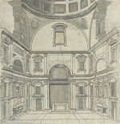
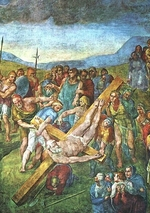
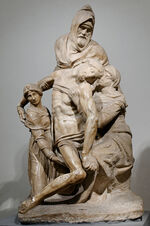
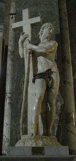

Michelangelo
Cliccare sulle immagini per ingrandirle
1 
2 
3 
4 
5 
6 
7 
8 
9 
10 
11 
12 
13 
14 
15 
16 
17 
18 
19 
20 
21 
22 
23 
24 
25 
26 
Michelangelo Buonarroti, detto Michelangelo
(Caprese 1475 - Roma 1564)

Introduzione
Uno dei più grandi geni artistici dell'umanità, ha condensato e portato a compimento, nella loro pienezza, tutte le ricerche dell'assoluto e della bellezza dell'alto Rinascimento, in modo meno sereno di Raffaello, ma con un dinamismo e un senso del dramma che aprono nuove prospettive.
Michelangelo Buonarroti nacque in una famiglia decaduta che pretendeva di avere un'ascendenza aristocratica e che si stabili a Firenze. I talenti del giovane ragazzo fecero sì che fosse affidato alla bottega del pittore Ghirlandaio, l'affrescatore più quotato in quel momento. Lorenzo de Medici, il Magnifico, notò l'apprendista, gli aprì i giardini del suo palazzo, la sua Accademia, avvicinandolo alla sua collezione di antichità; Michelangelo vi frequentò un circolo di intellettuali raffinati (Poliziano, Marsilio Ficino, Pico della Mirandola), che ebbero una profonda influenza sulla sua formazione spirituale e la sua ambizione d'artista creatore. L'Accademia era diretta dallo scultore Bertoldo di Giovanni (ca. 1420-1491), specializzato nel bronzo. Al contrario, Michelangelo fu soprattutto uno scultore su marmo; lo studio degli antichi sembra perciò aver contato in modo preponderante nella sua formazione. A quel tempo non passava giorno senza che dal suolo italiano venisse alla luce qualche reperto importante: ad esempio, all'inizio del XVI secolo, il famoso gruppo del Laocoonte. Michelangelo ricercò nella scultura antica la scienza della composizione, del raggruppamento dei personaggi, dell'armoniosa bellezza del corpo umano, del gioco espressivo della muscolatura, ma vi aggiunse una ricerca del movimento e un approfondimento psicologico e morale. Il corpo umano diventava un linguaggio tramite il quale l'artista faceva sentire le emozioni e le passioni dell'uomo, quindi, ascendendo al piano metafisico, esprimeva tutta la tragicità del destino umano davanti al suo creatore.
Sono state molte le dissertazioni sul significato e l'interpretazione neoplatonica dell'opera di Michelangelo, fino a volerne spiegare i dettagli minori tramite quella filosofia, senza dubbio in modo un po' eccessivo. Certamente Michelangelo fu un artista cosciente della sua importanza e del valore del messaggio della sua opera. La sua fede religiosa perdurò per tutta la sua vita, anche se, come molti personaggi del Rinascimento, fu tentato da sogni di sincretismo. L'antichità era vissuta intensamente da Michelangelo nelle opere ritrovate e nel suo spirito, senza timore nel mescolare gli elementi pagani al suo universo cristiano. D'altra parte, come sappiamo, visse in un epoca particolarmente tumultuosa: questo fiorentino vide, nella sua amata città, la rapida successione di regimi politici, il trono di San Pietro occupato da pontefici scandalosi (Alessandro Vi Borgia), deboli o cupidi, il vacillare della fede in molti personaggi e il rifiuto dell'ortodossia, così come del principio d'autorità. Michelangelo è stato accusato spesso di essere andato oltre i limiti dell'eresia e, sicuramente, frequentò dei luoghi incerti. Nonostante il tormento di cui le sue opere recano le stigmate, ebbe sempre la massima transigenza. L'instabilità degli avvenimenti disturbo considerevolmente i suoi progetti e la sua carriera; il suo carattere difficile, il suo orgoglio ombroso, i suoi sbalzi d'umore, che lo facevano passare dall'esaltazione allo scoraggiamento e alla disperazione, influenzarono l'esito della sua opera, che in larga misura si presenta incompiuta, come una sorta di grande sconfitta, soprattutto nel campo della scultura. Michelangelo intendeva essere, innanzitutto, uno scultore. Egli considerava la scultura come la più nobile di tutte le arti, soprattutto a causa della sua difficoltà. Di fronte al blocco di marmo, dal quale occorreva tirare fuori una forma vivente, conobbe la lotta patetica del creatore mai soddisfatto. A causa del senso del fallimento, gli capitò spesso di non portare il suo lavoro fino alla perfezione ultima, fino alla lucidatura che dà al marmo la luminosità e l'aspetto prezioso, lasciando in alcuni punti le tracce dello scalpello, della "gradina" e un'opacità ruvida e addirittura liberando a malapena la forma desiderata. Un certo romanticismo di è impadronito di questo non finito per esprimere i tormenti più segreti del maestro, attribuendogli un significato supremo, anche se la verità è molto più semplice: Michelangelo si rifiutava di continuare, a volte per stanchezza, a volte a causa della rabbia derivante dal non ottenere quanto desiderato. Ha sempre trattato con un senso molto scrupoloso della finitura le opere che considerava terminate. Ma questa bruttezza ha commesso delle devastazioni nei tempi successivi, e Michelangelo, per questa sua ripugnanza ad andare fino in fondo, sempre più frequente con l'avanzare dell'età, è diventato il simbolo della lotta senza fine del genio umano contro la cieca fatalità, una sorta di nuovo Sisifo.
Inizio e primi capolavori
All'inizio della sua carriera, durante il soggiorno all'Accademia, è possibile attribuire un bassorilievo, ancora confuso, la Battaglia fra Centauri e Lapiti (1) (Firenze, Casa Buonarroti) e, come contrappunto tra paganesimo e cristianesimo, la Madonna della scala (2) (Firenze, Casa Buonarroti), piena di serenità, in cui Michelangelo riconosce, nella tecnica del rilievo, il suo debito verso il grande predecessore Donatello. Fin dall'inizio, Michelangelo oscilla quindi tra una tendenza dinamica e drammatica e una tendenza antitetica, incline alla dolcezza ed a una certa soavità, nella quale è possibile percepire l'eco di Leonardo da Vinci. è stata ritrovata anche un'altra opera giovanile, un crocifisso in legno commissionato dal priore di Santo Spirito a Firenze, del quale viene messa in dubbio l'autenticità; sarebbe l'unica scultura alla quale l'artista avrebbe aggiunto una policromia, procedimento rispetto a cui era contrario, preferendo conservare il candore luminoso od opaco del marmo. Nel 1492, alla morte di Lorenzo il Magnifico, Michelangelo lascia il palazzo Medici e, nel 1494, visita Venezia e Bologna; inizia a praticare studi anatomici sui cadaveri. Di ritorno a Firenze, nel 1495, scolpisce, per un cardinale, un Cupido addormentato oggi scomparso; a causa della sua perfezione, quest'opera fu scambiata per un reperto antico. Il cardinale invita il giovane scultore ad andare a Roma, e l'atmosfera pesante di Firenze contribuisce al suo bisogno di evasione. In quel momento sembrava dunque che Michelangelo si fosse orientato verso una comoda carriera da scultore, in un registro molto aperto, ma nel quale la mitologia, di gran moda, imponeva i soggetti. Nel frattempo, a Bologna era stato ingaggiato per collaborare al completamento dell'"arca" di San Domenico, e queste piccole statuette di un angelo inginocchiato, dei santi Petronio e Procuro rivelano l'influenza di un maestro degli inizi del quattrocento, Iacopo della Quercia, dal quale Michelangelo riprende i panneggi gonfi e la passione contenuta. Su richiesta di un cardinale francese, Michelangelo esegue a Roma il suo primo grande capolavoro, una delle opere più popolari, la Pietà di San Pietro (3), sfigurata da un atto vandalico nel 1972. Il tema e la composizione sono insoliti, di origine nordica e non italiana, ma l'artista ottiene dal marmo un poema squisito e sconvolgente. Il viso puro della Vergine (rappresentata curiosamente molto giovane, della stessa età del suppliziato) si volge con grazia sul corpo abbandonato, ma non scomposto di un Cristo bello come un Adone nella morte, la cui anatomia armoniosa è fatta risaltare dal panneggio ammirevole del grande mantello tolto dalla madre dolorosa come per farne un sudario. Questo capolavoro giovanile, in cui esplodono la virtuosità e la sensibilità dello scultore, è oltretutto l'unisca scultura orgogliosamente firmata dall'autore sulla striscia diagonale che copre il grembo della Vergine. Più o meno nello stesso periodo in cui scolpisce questa pia immagine, Michelangelo lavora alla più pagana delle sue figure, uno straordinario Bacco ebbro (4) (Firenze, museo del Bargello), giovane efebo titubante di cui si fa scherno, alle sue spalle, un ironico satiro. Con l'ardore e l'intensità della vita di quest'opera, l'artista supera i suoi modelli antichi.
Se le statuette per l'altare Piccolomini nella cattedrale di Siena sono di attribuzione dubbia, è stato ipotizzato che la Vergine della chiesa di Notre-Dame de Bruges (5) sarebbe stata inizialmente destinata a questo gruppo, la cui data di realizzazione risale al 1500 circa. Il bell'ovale del viso assume qui un'espressione imbronciata. Questo stesso tema della Vergine con Bambino ispira allo scultore, sempre sotto la forme del tondo, di moda in Italia, due opere affascinanti in cui esplora (per non tornarvi mai più) le possibilità del bassorilievo, il tondo Pitti (6) (Bargello) e il tondo Taddei (7) (Londra, Royal Academy), dal nome delle famiglie che li hanno posseduti. Nella stessa epoca, Michelangelo si ricorda di avere appreso la pittura e realizza, con la stessa forma circolare, il tondo Doni (8) (Firenze, Uffizi), rappresentante una Sacra Famiglia con un curioso effetto di accorciamento dovuto al ripiegamento della Vergine e, sullo sfondo, dei fauni nudi, la cui presenza in questa scena religiosa potrebbe essere spiegato in maniera metaforica (il paganesimo che cede il posto al cristianesimo?). In questa primo dipinto conosciuto, Michelangelo mostra un sorprendente senso del modello e una ricerca originale delle tonalità. Tuttavia, quello che seguirà sarà un altro capolavoro della scultura. Di ritorno a Firenze, dove una segreta nostalgia lo ricondurrà senza tregua, Michelangelo lavora su un blocco di marmo, inizialmente destinato ad una statua per la cattedrale (ma giudicato troppo sottile e quindi abbandonato), realizzando un gigantesco David (1501-1504); La statua è alta oltre 4 metri, in una nudità eroica, e reca in modo disinvolto la fionda su una spalla: immagine rigogliosa di una giovinezza vittoriosa in cui l'artista risolve con brio la mancanza di spessore del blocco. Il David ottenne l'onore di essere collocato di fronte al Palazzo Vecchio (attualmente si trova all'Accademia). Questa reputazione rese Buonarroti l'artista più in vista di Firenze. Nel 1503 la Signoria gli commissiona un grande affresco per decorare la sala del Consiglio: oggi scomparso, Michelangelo vi ritrae dei tumultuosi gruppi relativi alla Battaglia di Cascina. Nello stesso tempo vede affidarsi la realizzazione dei 12 apostoli, di dimensioni maggiori del naturale, per la cattedrale. Di questo grande progetto resta soltanto il San Matteo (10), appena sbozzato dal blocco (Firenze, Accademia).
Nel 1505, il papa, che allora era il focoso Giulio II (Giuliano Della Rovere), chiama Michelangelo a Roma, incaricandolo di realizzare la sua tomba. è l'inizio di una lunga e dolorosa impresa che, analogamente alla cappella Medici a Firenze, perseguiterà e ossessionerà l'artista per tutta la vita, senza trovare una soluzione degna del disegno iniziale. Per la tomba del pontefice viene presa in considerazione la chiesa di San Pietra, in piena costruzione in quel momento, ed anche il posto d'onore sotto la cupola prevista. Da quell'istante Michelangelo attrae su di sé l'odio accanito del grande architetto Bramante. Questo antagonismo lo seguirà per lungo tempo, e non sarà di grande aiuto per le sue imprese. Lo stesso Giulio II cambia idea, commissionando a Buonarroti reticente una colossale statua in bronzo che lo riproduca, destinata ad ornare la facciata di San Petronio a Bologna e simbolizzante l'assoggettamento della città al papa. Quest'opera in bronzo, eccezionale nell'opera dell'artista, conoscerà la sorte dei manifesti politici: alla prima ribellione, verrà rovesciata e fusa.
Il soffitto della Sistina
Nel 1508 Giulio II ha una nuova idea, ed incarica l'artista, del quale aveva intuito la genialità, di decorare il soffitto della cappella Sistina. Michelangelo otterrà di completare questo programma dipingendo anche degli affreschi nelle lunette delle finestre e nelle interlobature. Sulle pareti, alcuni affreschi anteriori evocavano scene del Vangelo e della vita di Mosè. Il programma che tocca al Buonarroti comprende la storia dell'umanità dalla Creazione fino a Mosè, ovvero, simbolicamente, il mondo prima della colpa, quindi l'attesa ansiosa della Redenzione. Sullo stesso soffitto, gli affreschi includono nove grandi riquadri rettangolari rappresentanti la creazione, il peccato originale e la storia di Noè (11). Le scene della creazione sono, a giusto titolo, le più celebri, specialmente quelle della creazione dell'uomo e della donna, alle quali l'artista, con un numero ridotto di figure, conferisce un'intensità drammatica e una grandezza epica, ma anche una profondità emotiva ineguagliabile. Non possiamo dimenticare lo sguardo, allo stesso tempo esitante ed abbagliato, del primo uomo, così come il gesto così maestoso e delicato del Creatore, che lo sfiora appena con il suo dito per instillargli la vita (12). È evidente che Michelangelo ha rotto con le immagini tradizionali, per creare una cosmogonia veramente personale, nella quale esprime tutta la forza della sua fede e tutta la passione del suo temperamento. Crea anche una canone del tutto personale. Corpi dalle muscolature ipertrofiche, disumane e a volte quasi mostruose; tuttavia si tratta di una storia sovrumana, che egli intende illustrare tramite queste figure smisurate e sfolgoranti. Sulla cornice che inquadra le scene bibliche vi sono degli adolescenti nudi seduti, in atteggiamenti diversi, dallo sguardo attento: sono gli ignudi (13), creazioni originali di Michelangelo, nei quali ha riposto tutte le sue ardenti ricerche sulla bellezza del corpo umano, intermediari (senza alcuna giustificazione scritturale) tra il cielo e la terra, archetipi delle nostre passioni e delle nostre facoltà. Questi essere misteriosi, ideali, alla ricerca di un'identificazione con il divino, si riferiscono senza dubbio alle teorie neoplatoniche di cui Michelangelo era intriso. Più in basso, tra le lunette e inquadrati da pilastri finti sostenuti da putti alla stregua di atlanti, dodici figure sedute evocano, alternativamente, profeti e sibille. Ancora una volta la maledizione dell'umanità è attenuata dall'annuncio del riscatto, ma la gravità, la severità dei personaggi non lascia filtrare quasi alcun barlume di speranza in questo muro compatto d'angoscia e tormento. La grazia è quasi del tutto assente, anche nelle figure femminili; l'enorme sibilla cumana (14), ad esempio, con le sue braccia nodose da lottatore da fiera, ispira piuttosto una repulsione spaventosa. Nei pennacchi ai quattro angoli si trovano degli episodi dell'Antico Testamento (Davide e Golia, Giuditta e Oloferne, ecc.), relativi ai salvataggi miracolosi di Israele, il popolo eletto. Nei triangoli rotondi al di sotto delle finestre, alcuni personaggi leggermente ripiegati su sé stessi apparterrebbero a famiglie pagane decadute al di fuori della Rivelazione; infine, nelle lunette, seduti sui due lati delle finestre, sono ritratti gli antenati di Cristo (15): un altro passo verso la Redenzione.
Dalla tomba di Giulio II alla cappella dei Medici
Michelangelo è completamente indaffarato nell'immenso lavoro sul soffitto della cappella Sistina fino al 1512. L'anno seguente Giulio II muore ed è sostituito da un Medici, Leone X, che non apprezza molto Michelangelo, sospettato di essere repubblicano. L'artista si rimette al lavoro per la tomba del pontefice scomparso. All'inizio questo doveva essere un edificio indipendente, di forma piramidale; sul livello inferiore avrebbero dovuto esserci delle statue di prigionieri e di vincitori, simbolizzanti le lotte della vita, ma anche le arti liberali. Al centro, potentemente seduto, Mosè e San Paolo, ovvero l'antica e la nuova Legge, e sulla sommità il papa giacente, sostenuto da angeli che lo accompagnano nella gloria eterna. Il nuovo contratto del 1513 con gli eredi modifica lo schema, semplificandolo, riducendo il numero delle figure e addossando il monumento al muro. A questa seconda versione sono collegati i due Schiavi (16) del museo del Louvre, che si dibattono nella loro prigionia con un'aria di sofferenza che non è solo fisica. Queste due sculture sono di una potenza espressiva raramente eguagliata. L'artista inizia così il suo Mosè, dalla muscolatura enorme e dallo sguardo affascinante e furioso, dotato di una forza imperiosa e sovrumana. Un nuovo cambiamento, nel 1516, comporta la riduzione della misura dei due schiavi: le statue sono appena abbozzate, ma già dall'aspetto suggestivo.
La tomba di Giulio II va verso un immane naufragio. Comunque nel 1517 Michelangelo si lancia con entusiasmo in una nuova commissione, la facciata della chiesa medicea di San Lorenzo, a Firenze (17), grandioso progetto di architettura e di scultura allo stesso tempo. Leone X gli affida nel 1520 la costruzione e la decorazione della cappella funebre che, innestata sulla stessa chiesa, accoglierà i due monumenti alla memoria di Giuliano de Medici (18), duca di Nemours, e di Lorenzo (19), duca d'Urbino, entrambi grandi difensori del trono pontificale. L'artista supera le aspettative di glorificazione dei Medici, offrendo un senso ancor più grandioso e generale, in cui si riconosce ulteriormente le idee neoplatoniche, di cui Michelangelo si era nutrito durante la sua giovinezza, e la sua tendenza ad elevarsi sempre ai grandi problemi dell'umanità. L'architettura, nella sua struttura, ricorda le sagrestie del quattrocento. Vi ritroviamo, in particolare, la decisione di ricorrere in pietra più scura, la pietra serena, per accentuare le linee architettoniche, ma con una potenza e un dinamismo nuovi. I monumenti funebri occupano due dei lati del quadrilatero, e adottano il medesimo schema piramidale: in una nicchia rettangolare sono collocate le due statue dei principi commemorati, in realtà dei ritratti idealizzati, resi eroici, entrambi recanti l'armatura dei condottieri romani: Giuliano, giovanile ed energico, rappresenta l'azione, con il viso in piena luce. Lo sguardo di Lorenzo, invece, resta immerso nell'ombra proiettata dall'elmo; Lorenzo medita, con la mano che sostiene la parte bassa del viso, pensieroso, misterioso, simbolo del pensiero che fa ripiegare l'uomo su sé stesso. Ai piedi di ciascuno dei due, un sarcofago il cui coperchio è costituito da due avvolgimenti, sui cui rampanti sono sdraiate, in modo molto scomodo, quattro figure nude, le cui membra sembrano quasi squartate a causa della posizione aggrovigliata in posizioni malagevoli; il viso sconvolto per la tristezza e la sofferenza, espressione dei tormenti dell'anima umana nel corso della vita. Queste figure sono le allegorie delle quattro parti del giorno, ovvero, se lo si desidera, del tempo che passa: il Giorno, la Notte, l'Aurora, il Crepuscolo, personaggi alternativamente maschili e femminili, dei quali alcuni presentano ancora delle superfici "non rifinite". Occorre dire che non fu Michelangelo a collocare i monumenti nelle loro posizioni, e che anche questo vasto progetto conobbe varie vicissitudini e mutilazioni. Inizialmente Michelangelo aveva previsto, per il livello inferiore, delle figure di Fiumi coricati al modo antico, che non furono neppure sbozzati (all'Accademia di Firenze è conservato un modello in argilla), ed anche degli affreschi nelle lunette superiori. Su un terzo lato della cappella di erge la Vergine Medici, che tenta di trattenere la turbolenza del Bambin Gesù seduto sulle sua ginocchia; questa non ha più la soavità melanconica delle Vergini del Vaticano e di Bruges, ma una specie di triste veemenza, interpretabile per la sua costruzione più robusta, il suo drappeggio più mosso e una sorta di selvatichezza nel volto.
Stanno sopraggiungendo dei tempi di disordine e violenza. A Firenze si insedia un governo popolare; nel 1527 c'è il sacco di Roma, e la civiltà umanista del Rinascimento sembra crollare sotto i colpi di nuovi barbari. L'artista risente profondamente di questi avvenimenti, che si aggiungono ai drammi interiori e alle molteplici traversie di cui la sua opera è vittima. Nel 1530 Firenze si arrende al papa Clemente VII. Ben presto Michelangelo non si sente più a casa a Firenze, che dal 1534 (dopo avere appena completato le tombe medicee) abbandonerà definitivamente per trasferirsi a Roma. Il monumento per Giulio secondo è diventato un vero e proprio incubo per Michelangelo, che nel 1532 decide di lasciarlo perdere, giungendo a un compromesso penoso: alcuni allievi mediocri partecipano alla finitura del monumento e alla sua collocazione nella piccola chiesa di San Pietro in Vincoli, in un contesto non proporzionato. Michelangelo partecipa in modo marginale a due nuove statue del monumento definitivo: Rachele, che simbolizza la vita contemplativa e Lia, la vita attiva, ambedue segnate da una tendenza al classicismo, al quale l'anziano artista aderisce. Non sono più presenti gli schiavi, e il gruppo della Vittoria, originariamente destinato a questo grande insieme, resta nella bottega (oggi nel Palazzo Vecchio di Firenze); la sua sapiente costruzione "in fiamma" ispirerà tutta la scultura manierista. Infine, le proporzioni del Mosè sono irrimediabilmente falsate dalla collocazione, sullo stesso livello, che non è affatto congrua.
"Il giudizio universale", le opere architettoniche
L'umore cupo e il pessimismo incombente dell'artista trapelano nel grande affresco del Giudizio universale, realizzato tra il 1536 e il 1541 su richiesta di Paolo III Farnese per coprire il muro del fondo della cappella Sistina. Le tonalità sono più scure che nell'affresco del soffitto; il Cristo Giudice, che riveste le sembianze di una specie di Apollo un po' appesantito, non è affatto rassicurante, e la maggior parte dell'umanità sembra votata a un destino maledetto. Questa composizione, parecchio confusa, soffre anche della vicinanza al capolavoro della maturità. Come per la Pietà, riecco un tema medievale che Michelangelo riprende ed amplia, aggiungendo riferimenti a Dante e all'antichità (la barca di Caronte). I supplizi dell'inferno rivelano una varietà e un'invenzione altrettanto morbose dei timpani romanici del XII secolo. Gli eletti hanno bisogno dell'aiuto degli angeli e dei santi per sollevarsi faticosamente fino al paradiso. Questo grande insieme ebbe un effetto superiore a tutto il resto dell'opera nel determinare la fama di "terribilità" di Michelangelo. D'altra parte sappiamo bene che, nel secolo successivo, le nudità eroiche della Resurrezione ebbero un effetto scioccante, e che fu necessario aggiungere dei calzoni per salvare la decenza!
La lunga vecchiaia dell'artista non sprofonda però totalmente dell'amarezza; Michelangelo resta attivo fino alla fine, partecipando alla vita artistica del suo tempo, consigliando, raccomandando i suoi allievi, innalzato a patriarca temuto e già avvolto dal suo mito. Annoda anche legami d'amicizia con il circolo romano che si riunisce attorno alla poetessa Vittoria Colonna (1492-1547), ritrovando quell'atmosfera dei grandi dibattiti caratterizzati dalle idee precedentemente coltivate nei giardini dell'Accademia. Lui stesso aveva iniziato da molto tempo a scrivere poesie che, come le sue lettere, ci forniscono informazioni sulla sua visione in rapporto alle concezioni platoniche. Il busto di Bruto (21) (Firenze, Bargello), effige ideale del tirannicida che scolpisce in quel momento, trasmette il riflesso delle sue amicizie romane. Michelangelo intraprende due nuovi affreschi per la cappella Paolina (Vaticano), la Conversione di San Paolo (22), disarcionato dal suo cavallo, e la Crocifissione di San Pietro (23); ma, anche qui, le mani degli allievi prendono il sopravvento durante la realizzazione.
Le questioni e i progetti architettonici occupano una parte sempre crescente del suo tempo. I suoi successi maggiori in questo campo furono il vestibolo e la scalinata della biblioteca Laurenziana a Firenze, iniziata nel 1523 e terminata solo nel 1560, secondo i suoi progetti, da Bartolomeo Ammannati (1511-1592). A Roma, sempre sulla base dei suoi disegni, viene dato avvio alla trasformazione delle terme di Diocleziano in una chiesa (Santa Maria degli Angeli, 1561-1566) e all'ultimo piano del palazzo Farnese, con il suo esuberante cornicione. A partire dal 1538 si lavora anche, sotto la sua direzione, alla ristrutturazione della piazza del Campidoglio; la piazza è attorniata da tre palazzi, decorati con possenti pilastri che ritmano e animano le facciate, scavate da ombre intense. Questa struttura dinamica impegna l'architettura in percorsi che conducono al barocco, coinvolgendo effetti scenici in cui entrano degli elementi scolpiti: qui, al centro della piazza, il Marco Aurelio a cavallo, mentre all'entrata sono presenti i Dioscuri; tutte queste sculture sono antiche. Infine, cosa che contribuirà in modo rilevante alla sua gloria, Michelangelo realizza il disegno della cupola di San Pietro. Architetto ufficiale della basilica nel 1546, non giunse tuttavia al suo completamento, ostacolato dalle manovre degli amici del suo predecessore, Antonio da Sangallo il Giovane. In seguito la struttura esterna fu ricostruita secondo un profilo diverso. È pur vero, tuttavia, che l'enorme ed imponente crociera di San Pietro è caratterizzata dal tratto distintivo del suo genio, e che il Bernini, altro genio, seppe ritrovare istintivamente un accordo profondo con il suo grande predecessore, che venerava genuinamente.
Il messaggio dello scultore
Ma Michelangelo non dimenticò la passione della sua vita, la sua vera vocazione, la scultura. Egli perseguì fino alla fine la sua lotta epica contro il marmo. È perseguitato dall'idea della morte e questa meditazione si conforma alla sua fede cristiana, rinforzata dall'età, si rivolge di nuovo all'immagine della Pietà, che gli aveva procurato il suo primo capolavoro: si tratta, più esattamente, di una Deposizione (24), iniziata verso il 1550, e destinata in origine alla sua stessa tomba (duomo di Firenze). Le forma sono ancora una volta del tutto originali. Questo corpo del Cristo, scomposto in una linea spezzata, per il quale le due donne laterali riescono a malapena ad attenuare la caduta, e la figura fantomatica (qualcuno vi ha visto un autoritratto) di Nicodemo o, secondo alcuni commentatori, di Giuseppe d'Arimatea, in piedi nella parte posteriore (come il Dio padre di certe Trinità germaniche), non sono attribuibili ad alcun modello italiano del tempo; di nuovo, sembra che occorra rivolgersi al mondo nordico per trovare una eco di questo misticismo espressionista e allucinato. L'ultimo tentativo, un altro uomo di dolore scomposto contro la Vergine in piedi, la Pietà Rondinini (25), del Castello Sforzesco di Milano, è pietoso e sconvolgente. L'artista, che aveva già dato dei furiosi colpi di martello contro la Pietà del Duomo, distruggendo una gamba del Cristo e sbriciolando le braccia, per la disperazione dovuta all'impossibilità di ottenere la forma desiderata, ridusse l'opera ultimata a una specie di fantasma carico di pentimento, di ossessione per la sconfitta e per il nulla, con un membro derisorio come ripiegato nel vuoto, analogia di un ex voto di infermo.
Non è certamente su quest'ultima immagine di impotenza - tanto apprezzata dai nostri contemporanei - che occorre basare la nostra considerazione, ma sui capolavori della giovinezza e della maturità, che con la loro tensione, la loro fierezza e la loro energia indomabile sconvolsero l'arte del tempo. Da quest'arte tormentata, ma connotata da una geniale invenzione delle forme, sarebbe derivata la corrente manierista, nata a Firenze sotto il patrocinio dello stesso maestro e destinata a diffondersi in tutta l'Europa. Infatti è stato proprio Michelangelo ad inventare la "linea serpentina" uno dei tratti essenziali del manierismo. Parecchie delle sue opere meritano l'epiteto di manierista, come la Vittoria, l'Ercole e Caco (Firenze, Casa Buonarroti) e questo Cristo di Santa Maria sopra Minerva (26), a Roma, bello come un eroe antico (1519-1521). Infine dal patetico michelangiolesco nascerà anche, più tardi, il barocco, i cui maestri riconosceranno in Buonarroti uno dei loro padri spirituali.
Michelangelo si spense a Roma, quasi novantenne, carico di gloria e già entrato nella leggenda. Ma è nella sua vera patria che riposa, a Firenze, dove fu sepolto.

© 2006 Umanista.Net